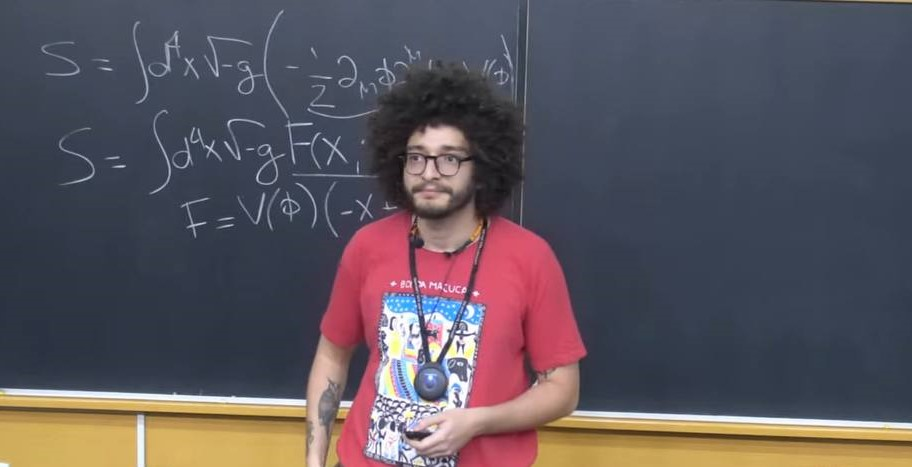

Presentation at Congresso Paulo Leal Ferreira 2025, at IFT-UNESP. Full presentation in YouTube.
I am João Rebouças, a postdoctoral researcher in observational cosmology at the University of Arizona Steward Observatory. I'm from Recife, Brasil, where I graduated in Physics at Universidade Federal de Pernambuco in 2020.
I started my PhD in observational cosmology in 2020 - when the COVID-19 pandemic started - at IFT-UNESP, with professor Rogério Rosenfeld as my advisor, and with professor Vivian Miranda as co-advisor. During my PhD, I learned about observational cosmology and developed projects that constrained dark energy and modified gravity models with multiple datasets: distance measurements, Cosmic Microwave Background anisotropies, and correlations between galaxies' positions and shapes. I concluded my PhD in Februrary 2025.
I worked as a postdoctoral researcher at Centro Brasileiro de Pesquisas Físicas (CBPF), in Rio de Janeiro, for one year from March 2025 to March 2026. I collaborated with researchers from CBPF in several projects, including: modelling matter power spectrum nonlinearities using quasi-N-body simulations; constraining dark energy sound speed and modified gravity using multiple cosmological probes; and using type Ia supernovae peculiar velocities to constrain the Universe's geometry and the growth of large-scale structure.
I am currently working as a postdoctoral research fellow at the University of Arizona Steward Observatory, in the Arizona Cosmology Lab. I conduct several projects within the Dark Energy Survey (DES), Legacy Survey of Space and Time (LSST), and Roman Space Telescope collaborations.